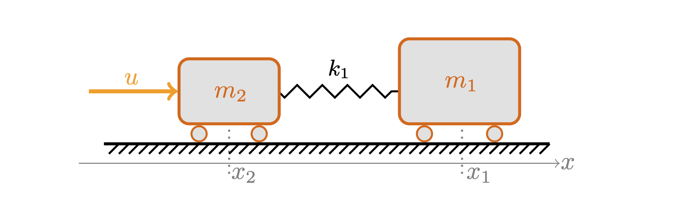

GAMM annual meeting 2025 (S20), Poznan, April 10th
IV Gosea (MPI Magdeburg), J Heiland (TU Ilmenau), D Pradovera (KTH)
A linear undamped 2-mass spring chain

it takes 4 integrations to see the effect of \(u\) in \(x_1\)
\[\begin{equation} \begin{split} \dot x = Ax + Bu\\ y = Cx + Du \end{split} \end{equation}\]
with transfer function
\[G(s) = C(sI-A)^{-1}B + D\]
Relative degree: \(\delta = \operatorname{deg} Q - \operatorname{deg} P\)
\(\delta>0\): strictly proper: \(G(s) \to 0\) for \(s\to \infty\)
\(\delta=0\): proper system: \(G(s) \to D\) for \(s\to \infty\)
\(\delta < 1\): DAE systems: \(G(s)\in \mathcal O(s^\delta)\)
a higher relative degree makes (proportional) output feedback \[u=k(y)\] less immediate
need for higher derivatives \[u=k(y,\dot y, \dotsc, y^{(\delta)})\]
see, e.g., the discussion for funnel control (Berger, Lê, and Reis 2018)
the index/relative degree determines the asymptotic behavior
should be included in the structure of the reduced order model
most approaches rely on a-priori knowledge of the degree and high-frequency data
approximate the transfer function \(G\) through
a rational interpolant \(\hat G\) at given \(m+1\) sample points \[\hat G(s_i) = G(s_i), \quad i=0,1,\dotsc,m\]
e.g. through the barycentric form \[\hat G(s) = \sum_{i=0}^m \frac{G(s_i)w_i}{s - s_i} \Bigg/ \sum_{i=0}^m\frac{w_i}{s - s_i}\]
for which the iterative AAA (Antoulas and Anderson 1986) algorithm determines optimal complexity \(m\) and abscissae \(s_i\) and weights \(w_i\)
generically, the barycentric form returns \(\hat G\) with \(\delta_{\hat G}=0\)
for, say, \(\delta_{\hat G}=-1\), one could set \(\hat G(s) = \hat G_0(s) + c_0 + c_1 s\) and identify \(c_0\) and \(c_1\) from (high-frequency) data
our proposal: rather use constraints on the weights
Theorem: ((Berrut and Mittelmann 1997), JH et al. ’25)
Let \(\mu\) and \(\nu\) be non-negative integers \(\leq m\) such that \[\begin{equation} \begin{cases} \sum_{i=0}^mw_if_is_i^l=0\quad\text{for } l=0,1,\ldots,\mu-1,\\ \sum_{i=0}^mw_if_is_i^\mu\neq 0, \end{cases} \end{equation}\] where, for interpolation, \(f_i:=G(s_i)\), and \[\begin{equation} \begin{cases} \sum_{i=0}^mw_is_i^l=0\quad\text{for } l=0,1,\ldots,\nu-1,\\ \sum_{i=0}^mw_is_i^\nu\neq 0. \end{cases} \end{equation}\] Then the barycentric form has relative degree \(\delta=\nu-\mu\).
Note: These are linear constraints on the weights.
We propose the following heuristics:
for different test cases
tried AAA and vector fitting (VF)
also on noisy data
| Test case | \(\delta\) | Training range | AAA(w/noise) | VF (w/noise) |
|---|---|---|---|---|
fwd 2-mass |
\(+4\) | \(10^{-2}\div 10^0\) | ✅(❌) | ✅(✅) |
bwd 2-mass |
\(-4\) | \(10^{-2}\div 10^0\) | ✅(❌) | ✅(✅) |
fwd 3-mass |
\(+6\) | \(10^{-2}\div 10^0\) | ✅(❌) | ✅(❌) |
bwd 3-mass |
\(-6\) | \(10^{-2}\div 10^0\) | ❌(❌) | ❌(❌) |
Oseen flow |
\(-1\) | \(10^{-2}\div 10^1\) | ✅(❌) | ✅(✅) |
eady (SLICOT) |
\(+1\) | \(10^{0}\div 10^3\) | ✅(❌) | ✅(✅) |
beam (SLICOT) |
\(+1\) | \(10^{-2}\div 10^2\) | ✅(✅) | ✅(✅) |
mna_1 (SLICOT) |
\(-1\) | \(10^{11}\div 10^{12}\) | ❌(❌) | ❌(❌) |